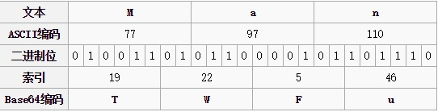
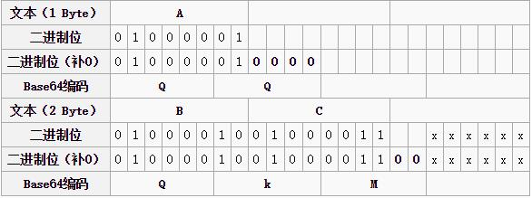

Base64编码原理
是什么？
Base64 is a group of similar binary-to-text encoding schemes that represent binary data in an ASCII string format by translating it into a radix-64 representation. The term Base64 originates from a specific MIME content transfer encoding
来自 wikipedia
说白了就是将二进制的数据转换成字符编码。Base64由大小写字母各26个，0-9的10个数字，加号+
以及斜杠/，一共64个字符组成，另外还用=来用作后缀，总共涉及的字符达到65个。
a）所有的二进制文件，都可以因此转化为可打印的文本编码，使用文本软件进行编辑；
b）能够对文本进行简单的加密。
来自 Base64笔记-阮一峰
原理

转换的时候，将三个byte的数据，先后放入一个24bit的缓冲区中，先来的byte占高位。数据不足3byte的话，于缓冲器中剩下的bit用0补足。然后，每次取出6（因为26=64）个bit，按照其值选择ABCDEFGHIJKLMNOPQRSTUVWXYZabcdefghijklmnopqrstuvwxyz0123456789+/中的字符作为编码后的输出。不断进行，直到全部输入数据转换完成。
如果要编码的字节数不能被3整除:
- 先使用0字节值在末尾补足，使其能够被3整除
- 进行base64的编码
在编码后的base64文本后加上一个或两个’=’号，代表补足的字节数

Base64字符串只可能最后出现一个或两个”=”，中间是不可能出现”=”的
用途
Base64 主要不是加密，它主要的用途是把一些二进制数转成普通字符用于网络传输。由于一些二进制字符在传输协议中属于控制字符，不能直接传送需要转换一下。Base64编码就是把二进制字节序列转化为ASCII字符序列。一般增加1/3长度，而且也是不可读的。
Base64常用于在通常处理文本数据的场合，表示、传输、存储一些二进制数据。包括MIME的email、在XML中存储复杂数据。
python中简单使用
1 | >>> import base64 |
base64 — RFC 3548: Base16, Base32, Base64 Data Encodings